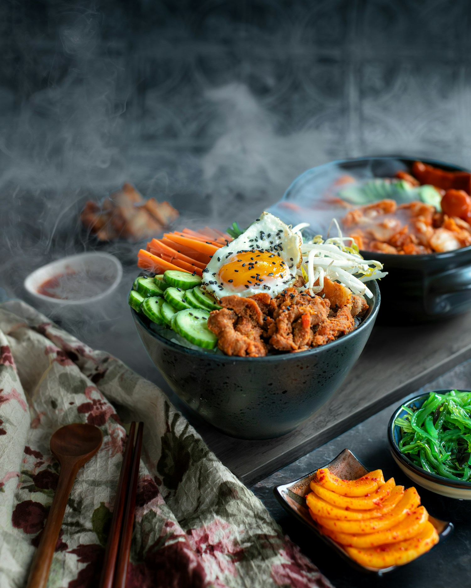

THE FIRST-SHOP EDIT · FOOD & EVERYDAY CULTURE
A little curiosity. A whole new cupboard.
A small guide to Korean pantry names, one good recipe and the pleasure of finding something new.

The best first Korean food shop starts with a meal you actually want to make. Let the recipe decide what goes into your basket, and build your cupboard a little at a time.
Save the ingredient list on your phone before you go. If a recipe names a particular paste, noodle or type of rice, keep that detail: similar-looking packages can do different jobs. The Korean names below can help you recognise a few common starting points.
A SMALL PANTRY GLOSSARY
Five names to get to know.
- 01 Rice 쌀 · ssal
- A foundation for many meals. Buy the type specified by your recipe and follow the packet’s cooking instructions.
- 02 Gochujang 고추장
- A fermented red chilli paste. Useful in sauces and marinades; check the heat level and the recipe’s quantity.
- 03 Soy sauce 간장 · ganjang
- A savoury seasoning. Korean soy sauces have different uses, so match the type to your recipe.
- 04 Sesame oil 참기름 · chamgireum
- A little toasted sesame oil brings a nutty aroma to dressings and finished dishes. Check the label for the type.
- 05 Kimchi 김치
- A family of fermented vegetables. Try a small pack first; varieties, spice and ingredients differ.
One recipe is enough to begin.
Pick a dish whose instructions feel manageable. Read it all the way through, check what is already in your kitchen and buy the missing ingredients. Leave the bigger haul for another day, when you know what you enjoy cooking.
For ideas, browse Oseyo’s Korean food guide or BOMBOM’s recipe collection . Both are retailer resources, so check whether a recipe calls for a particular branded product. For more background and cooking ideas, meet the writers and creators in our people edit.
Keep the new words with your shopping list. Recognising 고추장 on a tub or 간장 on a bottle turns the next trip into a more familiar one.
Make the basket yours
Read ingredient and allergen labels; products with similar names can have different ingredients. Kimchi may contain fish or shellfish ingredients, so check for an appropriate labelled product if that matters for your diet. Follow each product’s storage instructions.
Editorial shopping suggestions, published 10 November 2026. Ingredient background: Oseyo food guide and publisher’s introduction to Korean Made Easy . Photograph by Maria Klichik , used under the Unsplash licence .